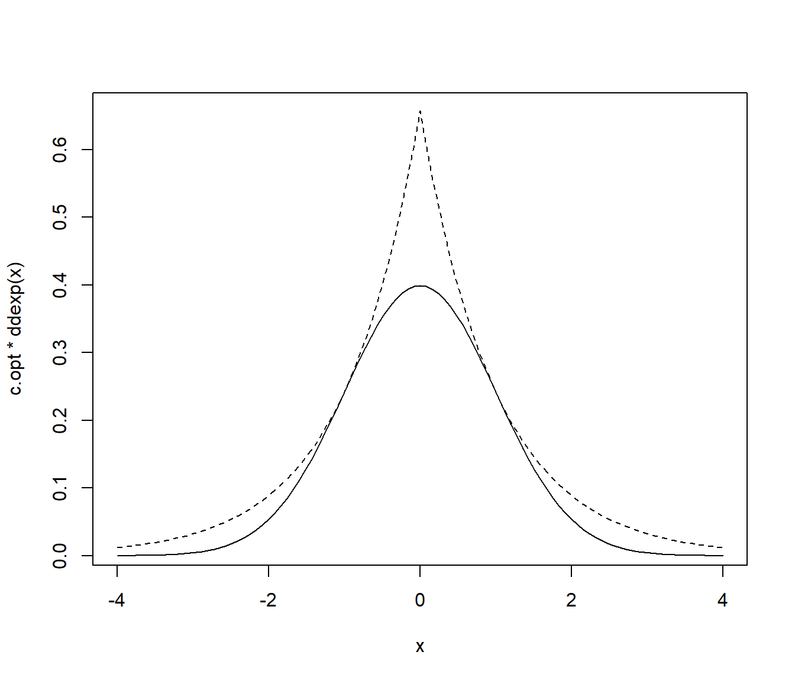
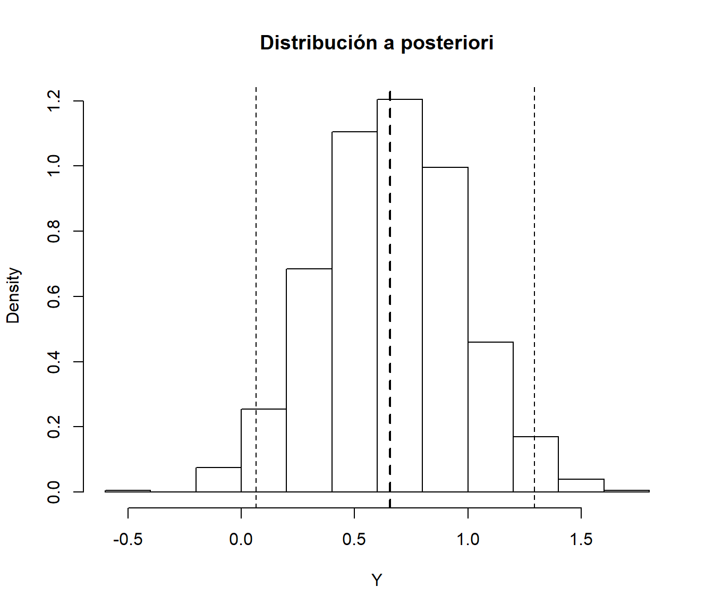

5.2 Método de aceptación rechazo
Se trata de un método universal alternativo al de inversión para el caso de que no se pueda emplear la función cuantil, pero se dispone de una expresión (preferiblemente sencilla) para la función de densidad \(f\left( x \right)\).
Si \(f\) es la densidad objetivo, la idea es simular una variable aleatoria bidimensional \(\left( X, Y\right)\) con distribución uniforme en el hipografo de \(f\) (el conjunto de puntos del plano comprendidos entre el eje OX y \(f\)): \[A_{f}=\left\{ \left( x,y\right) \in \mathbb{R}^{2}:0\leq y\leq f\left( x\right) \right\}.\] De esta forma la primera componente tendrá la distribución deseada:

\[ P\left( a<X<b\right) = \frac{\text{Area de }\left\{ \left( x,y\right) \in \mathbb{R}^{2}:a<x<b;~0\leq y\leq f\left( x\right) \right\} }{\text{Area de } A_{f}} \\ = \int_{a}^{b}f\left( x\right) dx \]
El resultado anterior es también válido para una cuasi-densidad \(f^{\ast}\) (no depende de la constante normalizadora). El resultado general sería en siguiente:
Si \(X\) es una variable aleatoria con función de densidad \(f\) y \(U \sim \mathcal{U}\left( 0, 1 \right)\) entonces \[\left( X,c\cdot U\cdot f\left( X\right) \right) \sim \mathcal{U}\left( A_{cf}\right)\] siendo \(A_{cf}=\left\{ \left( x, y \right) \in \mathbb{R}^{2} : 0 \leq y \leq cf\left( x \right) \right\}\).
Recíprocamente si \(\left( X,Y\right) \sim \mathcal{U}\left(A_{cf}\right) \Rightarrow X\sim f\).
Para generar valores de una variable aleatoria bidimensional con distribución uniforme en \(A_{f}\) (o en \(A_{f^{\ast }}\)), se emplea el resultado anterior para generar valores en \(A_{cg} \supset A_{f}\), siendo \(g\) una densidad auxiliar (preferiblemente fácil de simular y similar a \(f\)). Teniendo en cuenta además que:
- Si \(\left( X,Y\right) \sim \mathcal{U}\left( A\right)\) y \(B \subset A\Rightarrow \left. \left( X,Y\right) \right\vert _{B} \sim \mathcal{U}\left(B\right)\)
Por tanto, si \(\left( T, Y \right)\) sigue una distribución uniforme en \(A_{cg}\), aceptando los valores de \(\left( T, Y\right)\) que pertenezcan a \(A_{f}\) (o a \(A_{f^{\ast }}\)) se obtendrán generaciones con distribución uniforme sobre \(A_{f}\) (o \(A_{f^{\ast }}\)) y la densidad de la primera componente \(T\) será \(f\).
5.2.1 Algoritmo
Supongamos que \(f\) es la densidad objetivo y \(g\) es una densidad auxiliar (fácil de simular y similar a \(f\)), de forma que existe una constante \(c>0\) tal que: \[f\left( x\right) \leq c\cdot g\left( x\right) \text{, }\forall x\in \mathbb{R}\text{.}\]
Algoritmo (Von Neuman, 1951):
Generar \(U\sim \mathcal{U}\left( 0, 1\right)\).
Generar \(T\sim g\).
Si \(c\cdot U\cdot g\left( T\right) \leq f\left( T\right)\) devolver \(X=T\),
en caso contrario volver al paso 1.
5.2.2 Densidades acotadas en un intervalo cerrado
Sea \(f\) una función de densidad cualquiera con soporte en un intervalo cerrado \([a,b]\) (es decir, \(\{x/f\left( x\right) \neq0\}=[a,b]\)) de tal forma que existe una constante \(M>0\) tal que \(f\left( x\right) \leq M\) \(\forall x\) (es decir, \(f\) es acotada superiormente). En este caso puede tomarse como densidad auxiliar \(g\), la de una \(\mathcal{U}(a,b)\). En efecto, tomando \(c=M\left( b-a\right)\) y teniendo en cuenta que \[g\left( x\right) =\left\{ \begin{array}{ll}\frac{1}{b-a} & \text{si } x\in\lbrack a,b]\\ 0 & \text{en caso contrario} \end{array} \right.\] se tiene que \(f\left( x\right) \leq M = \frac{c}{b-a}=c\cdot g\left( x\right)\), \(\forall x\in\lbrack a,b]\). Así pues, el algoritmo quedaría como sigue:
Generar \(U,V\sim \mathcal{U}\left( 0, 1\right)\).
Hacer \(T = a + \left( b-a \right) V\).
Si \(M \cdot U\leq f\left( T \right)\) devolver \(X = T\),
en caso contrario volver al paso 1.
Nota: no confundir \(M\) con \(c = M \left( b - a \right)\).
Desarrollar el código necesario para generar, por el método de aceptación-rechazo, una muestra de \(n\) observaciones de una distribución normal estándar: \[f\left( x\right) =\frac{1}{\sqrt{2\pi}}e^{-\frac{x^{2}}{2}}\text{, }x\in\mathbb{R}\text{, }\] empleando como distribución auxiliar una doble exponencial con \(\lambda=1\) (más adelante veremos que esta es la elección óptima para el parámetro de la densidad auxiliar) y que la cota optima es:\[c_{\text{opt}}=\sqrt{\frac{2e}{\pi}}\simeq1.\,3155.\] Para establecer la condición de aceptación o rechazo se puede tener en cuenta que: \[c\cdot U\cdot\frac{g\left( T\right) }{f\left( T\right) }=\sqrt{\frac {2e}{\pi}}U\sqrt{\frac{\pi}{2}}\exp\left( \frac{T^{2}}{2}-\left\vert T\right\vert \right) =U\cdot\exp\left( \frac{T^{2}}{2}-\left\vert T\right\vert +\frac{1}{2}\right) ,\] aunque en general puede ser recomendable emplear \(c\cdot U\cdot g\left( T\right) \leq f\left( T\right)\).
# densidad objetivo: dnorm
# densidad auxiliar: ddexp
# EJECUTAR CÓDIGO DEL APARTADO A DEL EJERCICIO 1
c.opt <- sqrt(2*exp(1)/pi)
lambda.opt <- 1
ngen <- 0
rnormAR <- function() {
# Simulación por aceptación-rechazo
# Normal estandar a partir de doble exponencial
while (TRUE) {
U <- runif(1)
X <- rdexp(1) # lambda = 1
ngen <<- ngen+1 # Comentar esta línea para uso normal
# if (U*exp((X^2+1)*0.5-abs(X)) <= 1) return(X)
if (c.opt * U * ddexp(X, lambda.opt) <= dnorm(X)) return(X)
}
}
rnormARn <- function(n=1000) {
# Simulación n valores N(0,1)
x <- numeric(n)
for(i in 1:n) x[i]<-rnormAR()
return(x)
}
# Grafico
curve(c.opt * ddexp(x), xlim = c(-4, 4), lty = 2)
curve(dnorm(x), add = TRUE)
Generar una muestra de \(10^{4}\) observaciones empleando este algoritmo. Obtener el tiempo de CPU y calcular el número medio de generaciones de la distribución auxiliar.
set.seed(54321) nsim <- 10^4 ngen <- 0 system.time(x <- rnormARn(nsim))## user system elapsed ## 0.14 0.03 0.19# Nº generaciones { cat("\nNº de generaciones = ", ngen) cat("\nNº medio de generaciones = ", ngen/nsim) cat("\nProporción de rechazos = ", 1-nsim/ngen, "\n") }## ## Nº de generaciones = 13163 ## Nº medio de generaciones = 1.3163 ## Proporción de rechazos = 0.2402948Representar el histograma y compararlo con la densidad teórica.
hist(x, breaks="FD", freq=FALSE) curve(dnorm(x), add=TRUE)
5.2.3 Eficiencia del algoritmo
Como medida de la eficiencia del algoritmo de aceptación-rechazo podríamos considerar el número de iteraciones del algoritmo, es decir, el número de generaciones de la densidad auxiliar y de comparaciones para aceptar un valor de la densidad objetivo. Este número \(N\) es aleatorio y sigue una distribución geométrica (número de pruebas necesarias hasta obtener el primer éxito) con parámetro \(p\) (probabilidad de éxito) la probabilidad de aceptación en el paso 3: \[p = \frac{\text{area}\left( A_{f}\right) }{\text{area}\left( A_{cg}\right) }=\frac{1}{c}.\] Por tanto: \[E\left( N \right) = \frac1p = c\] es el número medio de iteraciones del algoritmo (el número medio de pares de variables \(\left( T,U\right)\) que se necesitan generar, y de comparaciones, para obtener una simulación de la densidad objetivo).
Es obvio, por tanto, que cuanto más cercano a 1 sea el valor de \(c\) más eficiente será el algoritmo (el caso de \(c=1\) se correspondería con \(g=f\) y no tendría sentido emplear este algoritmo). El principal problema con este método es encontrar una densidad auxiliar \(g\) de forma que: \[c_{\text{opt}}=\max_{\{x : g\left( x\right) >0\}} \frac{f\left( x\right) }{g\left( x\right) }.\] sea próximo a 1. Una solución intermedia consiste en seleccionar una familia paramétrica de densidades \(\{g_{\theta} : \theta \in \Theta\}\) entre las que haya alguna que se parezca bastante a \(f\), encontrar el valor de \(c\) óptimo para cada densidad de esa familia: \[c_{\theta}=\max_{x}\frac{f\left( x\right) }{g_{\theta}\left( x\right) }\] y, finalmente, elegir el mejor valor \(\theta_{0}\) del parámetro, en el sentido de ofrecer el menor posible \(c_{\theta}\): \[c_{\theta_{0}}=\min_{\theta\in\Theta}\max_{x}\frac{f\left( x\right) }{g_{\theta}\left( x\right) }.\]
Continuando con el Ejercicio 5.2 anterior del método de aceptación-rechazo para generar observaciones de una distribución normal estándar, empleando como distribución auxiliar una doble exponencial:
Aproximar la cota óptima numéricamente.
# Obtención de un valor c óptimo aproximado optimize(f=function(x){dnorm(x)/ddexp(x)}, maximum=TRUE, interval=c(-1,1))## $maximum ## [1] -0.999959 ## ## $objective ## [1] 1.315489# NOTA: Cuidado con los límites # optimize(f=function(x){dnorm(x)/ddexp(x)}, maximum=TRUE, interval=c(0,2)) # Valor óptimo real # sqrt(2*exp(1)/pi) c.opt## [1] 1.315489Aproximar el parámetro óptimo de la densidad auxiliar numéricamente (normalmente comenzaríamos por este paso).
# Obtención de valores c y lambda óptimos aproximados fopt <- function(lambda) { # Obtiene c fijado lambda optimize(f = function(x){dnorm(x)/ddexp(x,lambda)}, maximum=TRUE, interval=c(0,2))$objective } # Encontar lambda que minimiza res <- optimize(f=function(x){fopt(x)}, interval=c(0.5,2)) lambda.opt2 <- res$minimum c.opt2 <- res$objective
5.2.4 Ejemplo: Inferencia Bayesiana
El algoritmo de Aceptación-Rechazo se emplea habitualmente en Inferencia Bayesiana:
\(f(x|\theta )\) densidad muestral.
\(\pi (\theta )\) densidad a priori.
\(\mathbf{x}=(x_{1},...,x_n)^{\prime }\) muestra observada.
La distribución a posteriori de \(\theta\) es: \[\pi (\theta |\mathbf{x})=\frac{L(\mathbf{x}|\theta )\pi (\theta )} {\int L(\mathbf{x}|\theta )\pi (\theta )d\theta }\] siendo \(L(\mathbf{x}|\theta )\) la función de verosimilitud (\(L(\mathbf{x}|\theta )=\prod\limits_{i=1}^{n}f(x_{i}|\theta)\) suponiendo i.i.d.). Es decir: \[\pi (\theta |\mathbf{x})\propto L(\mathbf{x}|\theta )\pi (\theta ).\]
Para simular valores de la densidad a posteriori \(\pi (\theta | \mathbf{x})\) a partir de la densidad a priori \(\pi (\theta )\)
\(\pi (\theta |\mathbf{x})/\pi (\theta )\propto L(\mathbf{x}|\theta )\)
\(L(\mathbf{x}|\theta )\leq c^{\prime }=L(\mathbf{x}|\hat{\theta})\) siendo \(\hat{\theta}\) el estimador MV de \(\theta\).
Algoritmo:
Generar \(U\sim \mathcal{U}\left( 0,1\right)\).
Generar \(\tilde{\theta}\sim \pi (\theta )\).
Si \(L(\mathbf{x}|\hat{\theta})\cdot U \leq L(\mathbf{x}|\tilde{\theta})\) devolver \(\tilde{\theta}\),
en caso contrario volver al paso 1.
Para la estimación Bayes de la media de una normal se suele utilizar como distribución a priori una Cauchy.
Generar una muestra i.i.d. \(X_{i}\sim N(\theta_{0},1)\) de tamaño \(n=10\) con \(\theta_{0}=1\). Utilizar una \(Cauchy(0,1)\) (
rcauchy) como distribución a priori y como densidad auxiliar para simular por aceptación-rechazo una muestra de la densidad a posteriori (empleardnormpara construir la verosimilitud). Obtener el intervalo de probabilidad al 95%.mu0 <- 1 n <- 10 nsim <- 10^3 set.seed(54321) x <- rnorm(n, mean = mu0) # Función de verosimilitud lik <- function(mu){prod(dnorm(x, mean = mu))} # Cota óptima # Estimación por máxima verosimilitud emv <- optimize(f = lik, int = range(x), maximum = TRUE) emv## $maximum ## [1] 0.7353805 ## ## $objective ## [1] 3.303574e-08c <- emv$objectiveEn este caso concreto, ya sabríamos que el estimador máximo verosímil es la media muestral:
mean(x)## [1] 0.7353958y por tanto:
c <- lik(mean(x)) c## [1] 3.303574e-08Finalmente podríamos emplear el siguiente código para generar simulaciones de la distribución a posteriori mediante aceptación-rechazo a partir de la distribución de Cauchy:
ngen <- nsim Y <- rcauchy(nsim) ind <- (c*runif(nsim) > sapply(Y, lik)) # TRUE si no verifica condición # Volver a generar si no verifica condición while (sum(ind)>0){ le <- sum(ind) ngen <- ngen + le Y[ind] <- rcauchy(le) ind[ind] <- (c*runif(le) > sapply(Y[ind], lik)) # TRUE si no verifica condición } { # Número generaciones cat("Número de generaciones = ", ngen) cat("\nNúmero medio de generaciones = ", ngen/nsim) cat("\nProporción de rechazos = ", 1-nsim/ngen,"\n") }## Número de generaciones = 5898 ## Número medio de generaciones = 5.898 ## Proporción de rechazos = 0.830451# Intervalo de probabilidad al 95% (IC Bayes) q <- quantile(Y, c(0.025, 0.975)) # Representar estimador e IC Bayes hist(Y, freq=FALSE, main="Distribución a posteriori") # abline(v = mean(x), lty = 3) # Estimación frecuentista abline(v = mean(Y), lty = 2, lwd = 2) # Estimación Bayesiana abline(v = q, lty = 2)
Repetir el apartado anterior con \(n=100\).